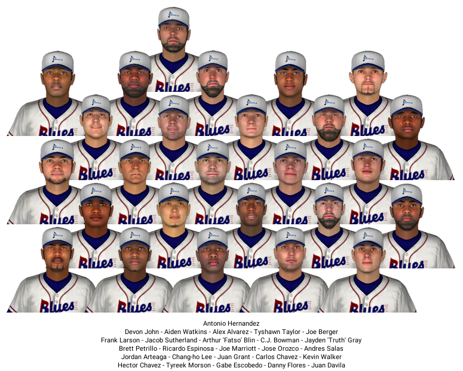

ABC Central Division
Nashville Blues
59–62 · 13.5 games back · Blues Stadium
Recent results
Upcoming schedule
Nashville Blues beat
The latest final on August 19 was Boston 2, Nashville 6.
This beat has results, upcoming games and franchise records. Its article archive is open for future coverage.
Franchise history
League almanac| Season | Franchise | W–L | Finish |
|---|---|---|---|
| 1980 | Nashville Blues | 75–87 | Regular season |
| 1979 | Nashville Blues | 83–79 | Regular season |
| 1978 | Nashville Blues | 78–84 | Regular season |
| 1977 | Nashville Blues | 74–88 | Regular season |
| 1976 | Nashville Blues | 76–86 | Regular season |
| 1975 | Nashville Blues | 83–79 | Regular season |
| 1974 | Nashville Blues | 77–85 | Regular season |
| 1973 | Nashville Blues | 92–70 | Tournament |
| 1972 | Nashville Blues | 78–84 | Regular season |
Team portrait
